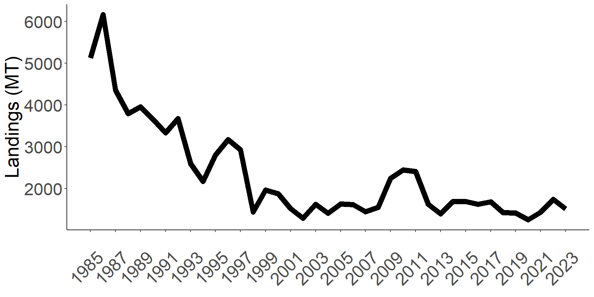

Suitable Indices for fisheries insurance
Lab+ Meeting
Nathaniel Grimes
Bren School of Environmental Science & Management
Last updated: Jun 04, 2025
Fishing is a risky business
Storms, marine heatwaves, and other environmental variables directly impact fisher livelihoods
Fisher choices and management take steps to eliminate risk
Lack of financial tools to hedge against losses
Index Insurance has the potential to address income variation

Bering Sea Crab Fisheries closure demonstrates the need for insurance
Marine Heatwave in 2018-2019 root cause of the collapse
- 10 Billion Snow Crab disappeared
- 55% decline of male Red King Crabs
- >$250 million each year loss in revenue
- Red King Crab opened in 2024, Snow crab just opened last month
Why Doesn’t a Market Exist?
Research Questions
1) What are the data factors that impede fisheries index insurance?
2) How can we successfully address each factor for successful insurance contracts?
3) What indices and models would be feasible for fisheries insurance?
4) Would fishing communitites have been better off with feasible insurance contracts?
Contributions
Expanding literature on environmental impacts on fisheries, espeically by expanding on use of machine learning.
Climate adapation and fishery resiliency
Meeting a policy need for fishers
“Our families, friends, and communitites are stuggling. We need help.”
The explosion of fishery and oceanopgraphic data means it’s finally possible to answer these questions
Four factors limit data driven insurance applications
1) How do we define fisheries loss?

2) Fisheries ecology is complex

3) Fisheries are dynamic

4) Fisheries are managed

No clear definition of loss in fisheries
No clear definition of loss in fisheries
Fisheries
How much fish should we have caught?
- Unobservable / Unknowable
Individual data is not public
Should we look at revenue? Landings? CPUE?
What years would you classify as a loss?
What years would you classify as a loss?
What years would you classify as a loss?

What years would you classify as a loss?
Market Squid is the most “corn” like species in California
Fisheries Ecology is way more complex than agriculture

Fisheries Ecology is way more complex than agriculture
Across all fisheries, we know the environment is important but don’t fully know how or why
Fish live in 3D space
Environmental impacts at different life stages have vastly different outcomes
Fertilization/Spawning depends on currents
Larvae growth depends on temperature
Juvenile growth depends on prey availability
Adults move based on thermal tolerance
Most stock assessment models do not incorporate the environment
Research usually involves fitting GAM or GMMs to recruitment measures to tease out statistically significant relationships with envrionmental variable
I just need strong correlation to build good insurance contracts, mcahine learning could meet that need.
Overview of Methods
Show how standard single index contracts in ag perform for the fishery with the best available data
Collect publically available data for possible indicies
Match data to spatial profile of fishery
Run models to predict catch
Design insurance contracts from predictive models
Evaluate whether fishers would be better or worse off with insurance
Simple, Single index insurance contract
All fisheries production \(y\) is a function of environmental variables \(WI\)
\[
y=g(WI) + \epsilon
\]
Estimate the relationship for fishery
\[
y_{t}=\beta_0 + \beta_1 WI_{t} + \epsilon_{t}
\]
Use model estimates to find \(I(WI)\) payout and \(\rho\) premium based on a given strike level (\(S_t\))
\[
\begin{aligned}
I_t(WI_t)&=\mathbb{E}[\max(\beta_1\times[S_{t}-WI_{t}],0] \\
\rho&=\mathbb{E}[I_t(WI_t)]\cdot m \\
S_t&=g_t^{-1}(y_t)\cdot c
\end{aligned}
\]
Measure improvements in utility with and without insurance
\[
\begin{aligned}
U_i&=\mathbb{E}[\ln (y_t+I_t(WI_t)-\rho)] \\
U_{noi}&=\mathbb{E}[\ln (y_t)] \\
U_{rr}&=\frac{U_i-U_{noi}}{U_{noi}}
\end{aligned}
\]
Environmental Data Sources
Match fishing blocks with spatial data
In general, fishers appear worse off with single index insurance contracts
Better models lead to slightly higher utility